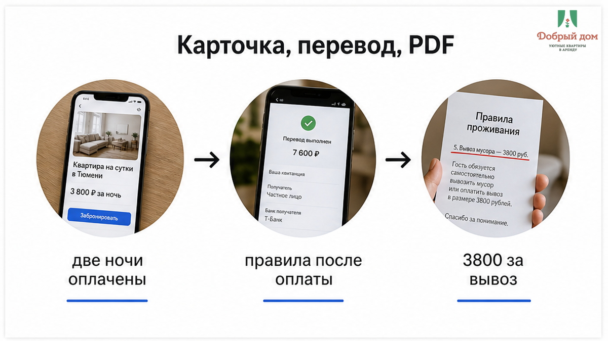
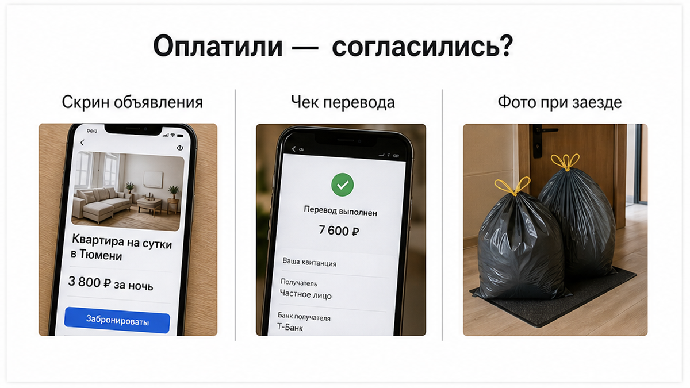
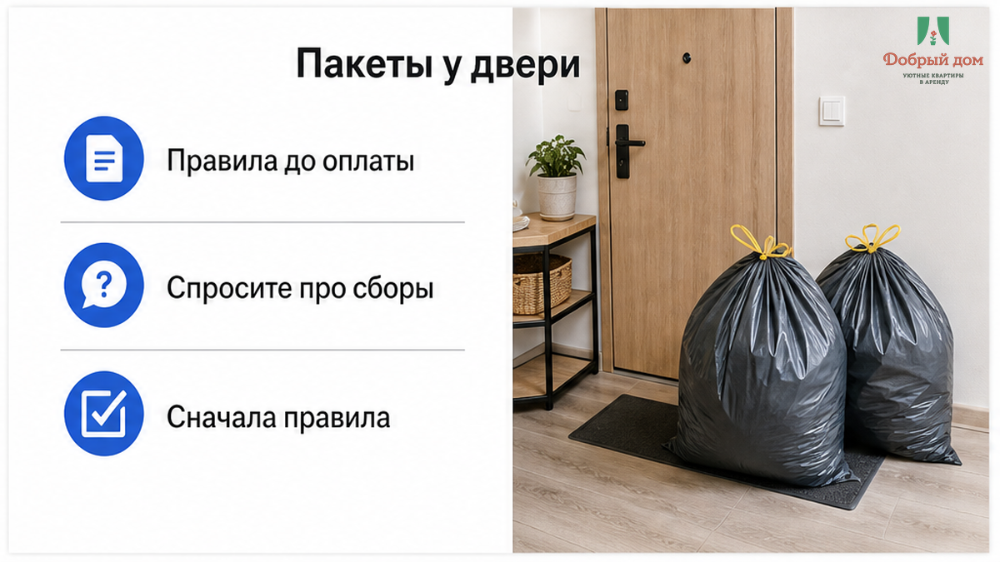
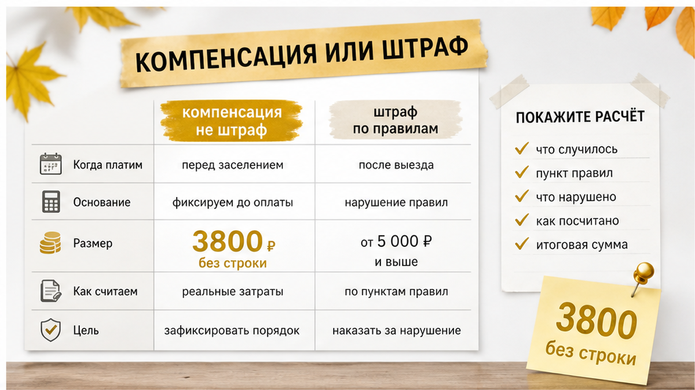
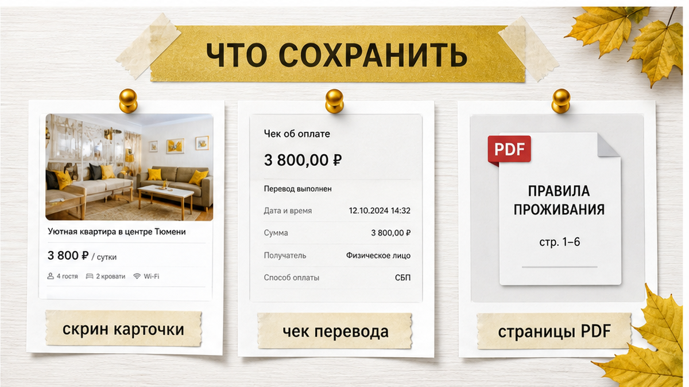
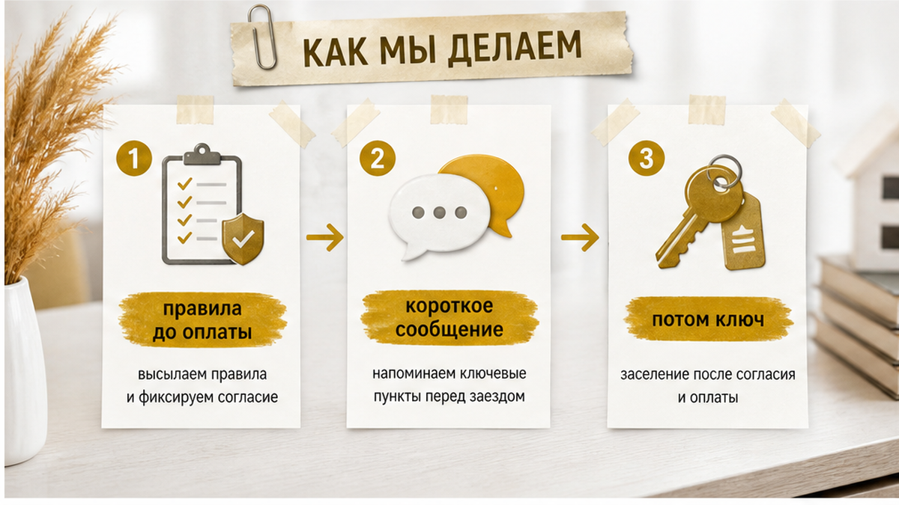

«В объявлении про мусор ни слова», — пишет гостья хосту в последнее утро. Две ночи в Тюмени оплачены, чемодан стоит у двери, такси уже вот-вот подъедет. В ответ приходит: «Правила отправил, вы же оплатили. За пакеты 3 800 ₽, переводите». Неприятный сюрприз возникает не из-за самих пакетов, а из-за порядка: сначала деньги, потом PDF с новым для гостя условием.
В карточке действительно не было строки про сбор за мусор. После перевода в чат пришёл файл «Правила проживания», а в нём — инструкция про мусор и фраза: «компенсация расходов на вывоз мусора — 3 800 ₽». Скриншот карточки у гостьи сохранился. Страницу PDF она не зафиксировала: открыла, пролистала и закрыла. К тому моменту деньги с карты уже ушли.
Я хост посуточной в Тюмени. Это «Добрый дом». Пишу тем же спокойным голосом, что и в нашем Telegram и MAX: как человек, который сам выдаёт ключи, отвечает на вопросы и видит переписку с обеих сторон.
История собирательная, редакционная. Это не конкретная бронь «Доброго дома» и не проверенный случай с какой-то площадки. Сумма 3 800 ₽ взята для заголовка и не означает тюменскую «рыночную ставку» за пакеты. Но саму схему многие узнают.

Сначала гость видит карточку: фотографии, цену за ночь, адрес, несколько строк про заселение. Про мусор и сборы на выезде там ничего нет. Потом он переводит деньги. И только после этого получает документ, в котором появляются условия, о которых до оплаты никто не говорил.
В этот момент человек уже думает о дороге, детях, парковке и ключах. Длинный PDF в телефоне редко читают от корки до корки. Это не повод обвинять гостя в невнимательности: так ведёт себя почти любой уставший человек, когда бронь уже оплачена. Но именно поэтому деньги до полной картины условий лучше не отправлять, даже если фильтр обещал «без предоплаты».
Иногда после перевода документы приходят, а хост перестаёт отвечать на вопросы. Мы писали об этом в отдельном разборе: перевели предоплату, а в чате тишина. Здесь ситуация выглядит мягче, но механика похожая: важные условия появляются тогда, когда спорить о них уже неудобно.
Мусор выносите сами — вы уточняли это до оплаты или узнали уже на лестнице с чемоданом? Это тот самый вопрос, который стоит задать заранее, пока деньги ещё не ушли.

Хост в этой истории опирается на фразу «вы же оплатили». Действительно, по статье 438 ГК РФ оплата может считаться принятием предложения, то есть акцептом оферты. Но речь идёт об условиях, которые человек мог увидеть в момент оплаты.
Статья 443 ГК РФ описывает другую ситуацию: если условия меняются, это уже новое предложение, а не просто продолжение прежнего. Статья 615 касается пользования жильём по условиям договора, и вопрос снова упирается в то, какие именно условия были согласованы. Поэтому важна не одна только оплата и не один только PDF, а содержание договорённости до перевода.
Я не юрист и ничего не обещаю. Каждый спор смотрят отдельно, а итог зависит от деталей и документов. Осторожная мысль здесь такая: PDF, который пришёл после оплаты, сам по себе не делает новую сумму автоматически согласованной. Если правила проживания посуточно гость получил заранее и успел прочитать, это одна ситуация. Если файл появился уже после перевода, спокойно спросить о происхождении суммы вполне разумно.

Представьте последнее утро. Пакеты завязаны, обувь уже надета, такси подъезжает, а на телефоне сообщение: «Переводите 3 800 ₽». Очень хочется заплатить и уехать без конфликта. Или, наоборот, ответить резко, потому что в объявлении про этот сбор не было ни слова.
«Я стою с пакетами у двери, хост требует 3 800 ₽ за мусор, а в объявлении про это ничего. Платить сейчас или нет?»
Чтобы посмотреть на такую ситуацию по существу, нужны карточка, переписка и то, что пришло после оплаты. Напишите нам в Telegram: https://t.me/Dobriy_dom_72. В комментариях под статьёй такие разборы не ведём: там нет ваших скриншотов и возможности быстро ответить. При желании можно обратиться и через MAX.

Вместо слова «штраф» часто говорят «компенсация расходов». Это не просто замена одного слова другим. Компенсация должна отвечать на три вопроса: что именно потребовало затрат, сколько это стоило и чем сумма подтверждается. Формулировка «за пакеты 3 800 ₽» без расчёта больше похожа на названную цифру, чем на понятный счёт.
Спокойный ответ может звучать так: «Покажите, пожалуйста, из чего складывается сумма и где это было указано до оплаты». Не обязательно ругаться или сразу угрожать отзывом. Сначала попросите расчёт и ссылку на те условия, которые были видны заранее.
Мусор — отдельный пункт правил. Он не включается молча в слово «уборка», а уборка не прячет автоматически расходы на вывоз. Похожая путаница бывает с бельём. В другом материале мы разбирали ситуацию, когда в карточке «уборка включена», а на выезде счёт за простыни. Предмет спора там другой, но корень тот же: карточка говорит одно, а выезд — другое. Инструкция про мусор должна быть понятной до заезда, а не появляться в руках в момент ухода.

У гостьи из нашей истории был скриншот карточки. Это уже полезно, но одной карточки мало. Пока вы ещё в квартире, сохраните объявление целиком: описание, цену и условия, которые были видны до оплаты. Сделайте это до перевода, а не после того, как страница обновилась.
Отдельно сохраните подтверждение перевода с суммой и всю переписку без удалений. PDF тоже лучше не просто открыть, а зафиксировать его страницы со сборами. Файлы в мессенджерах иногда теряются, а иногда отправитель удаляет сообщение. Даже если кажется, что документ легко будет найти потом, скриншот занимает меньше минуты.
Сразу после входа сфотографируйте квартиру: кухню, ведро, балкон и прихожую. Если в ведре уже лежал чужой пакет, снимок это покажет. Такой совет встречается и в обучении для хостов на Авито, но полезен он обеим сторонам. О самостоятельном заезде мы писали здесь: бесконтактное заселение и фото после входа. Две минуты с телефоном в начале могут сэкономить полчаса переписки в конце.

Когда гости ищут квартиры посуточно в Тюмени, они сравнивают цену за ночь. Это нормально, но цена за ночь не всегда показывает всю стоимость проживания. Поэтому у нас правила уходят вместе с подтверждением брони, до оплаты, отдельным коротким сообщением, а не PDF на десять страниц.
В правилах прямо написано, куда выносить мусор, где стоят контейнеры и есть ли сборы на выезде. Если гость просит сразу ключ, а правила обещает прочитать «потом», мы ключ придержим. Это не недоверие и не попытка усложнить заселение. Нам важно, чтобы человек знал условия до того, как войдёт в квартиру.
Отправим правила, дождёмся короткого «прочитал, всё понятно» и только после этого пришлём код. Сначала правила. Потом ключ. Так меньше шансов, что важная строка обнаружится уже у двери.
Правила, которые пришли после оплаты, похожи на расписание, которое вам вручают, когда поезд уже ушёл со станции. Бумага в руках есть, но повлиять на рейс вы уже не можете. Просите расписание до билета: что входит в цену, что считается отдельно, куда девать мусор и сколько стоит, если его не вынести.
Подобрать квартиру с понятными условиями можно на сайте https://добрыйдом-72.рф/, а забронировать — на странице https://добрыйдом-72.рф/booking/. Телефон: +7 (993) 574-83-22. Пишите в Telegram https://t.me/Dobriy_dom_72, в MAX https://max.ru/id660300569233_biz или менеджеру https://t.me/Dobriy_dom_Tyumen. Правила пришлём до оплаты.